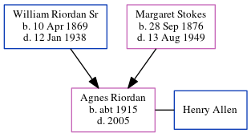

Agnes Elise Allen (née Riordan) c1915 - 2005
[ Home ] | [ Calendar ] | [ Surnames Index ] | [ Census Index ] | [ Family History ]The child of William Riordan Sr and Margaret Stokes, Agnes Riordan, the great-aunt of Michele Copp (née Phillips), was born in Georgia c. 19151,2. She and married Henry Allen in Pontiac, Michigan, USA on Oct 9, 1933.
During her life, she was living in Atlanta Ward 3, Fulton, Georgia in 19201; and in Atlanta, Fulton, Georgia in 19302.
She died in 2005 in Michigan.
Parents
- William Joseph Sr was born on Apr 10, 1869
- Margaret Louise was born on Sep 28, 1876
Citations
- 1920 United States Federal Census Online publication - Provo, UT, USA: MyFamily.com, Inc., 2005. For details on the contents of the film numbers, visit the following NARA web page: NARA. Note: Enumeration Districts 819-839 on roll 323 (Chicago City.Original data - United States of America
- 1930 United States Federal Census Online publication - Provo, UT, USA: MyFamily.com, Inc., 2002.Original data - United States of America, Bureau of the Census. Fifteenth Census of the United States, 1930. Washington, D.C.: National Archives and Records Administration, 1930. T626, 2,667 rol
Family Tree
Generated by ged2site. Last updated on Jun 6, 2024